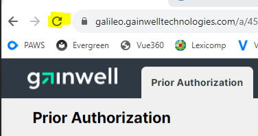
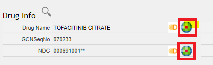
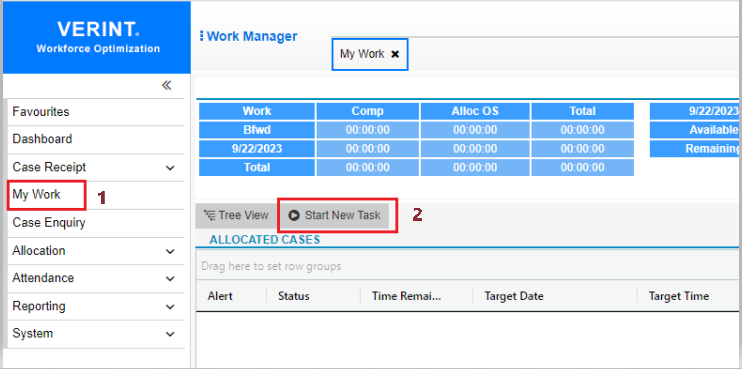
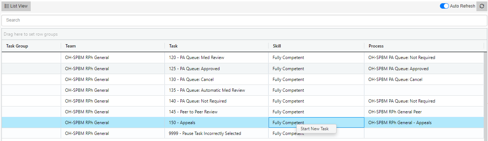
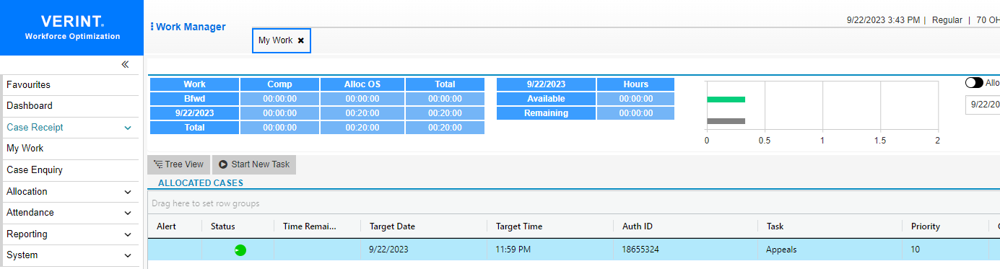

Verint and Prior Authorization Workspace (PAWS)¶
Training Videos¶
WM & PAWS Training Workshop Video 7/17/23
Verint Work Manager- Powerpoint
Operations Manager-Workspaces for Pharmacy PA Training Video
PAWS Tips¶
- CTRL + W = Short key to close a tab after completion of a PA
- Browser Refresh button- will reset the PA Queue back to default settings; when checking status count or checking your "assigned to" list (which will default back to this list upon completion of a PA), you can quickly go back to the main PA queue by hitting the browser "refresh" button to reset the settings

- Lexicomp searches: it is faster to click on the Lexicomp icon next to the drug name-> this will automatically search the drug name in Lexicomp on the Lexicomp tab vs clicking on the tab and doing a manual search. (combo drugs may not work by clicking the icon by the name but using the NDC icon should- this is being looked at by the developers)

PAWS Suggestion¶
Password Reset¶
Username: "dxchcwfo " (usually first inital and last name)
Reference link¶
(Archived) How to change you status to Appeals in Verint¶
How to change you status to Appeals in Verint
- In Verint, go to My Work tab
- Then click on the “Start New Task.”

3.This will bring your skills. Right click on the Appeals line and Start Task.

4.You will be brought back to the My work screen with a task started on Appeals.

5.When done working appeals, Book Out the Appeals task.